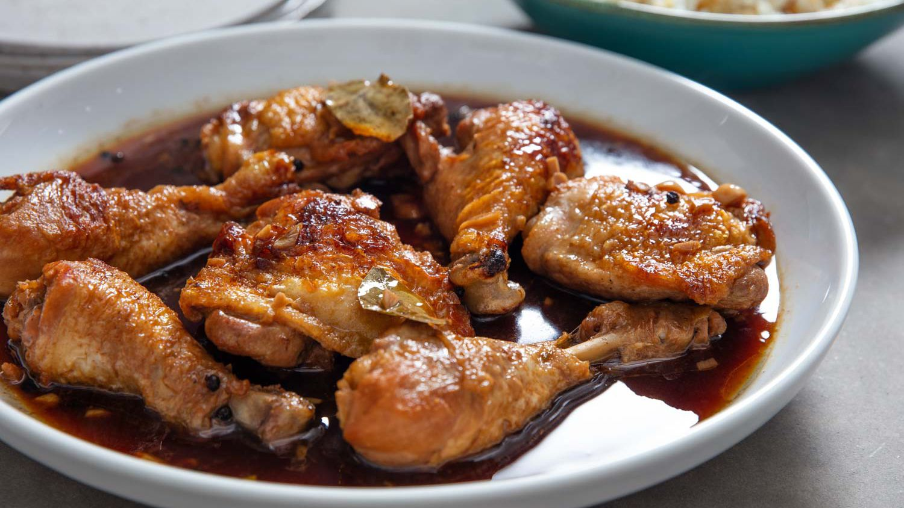

This is the classic Filino dish, that made simple combination of oyster sauce marination of chicken. It is widely loved by Filipinos and known as the Iconic dish that defines the Philippines.
Heat the vegetable oil in a large skillet over medium-high heat. Cook chicken pieces until golden brown on both sides, then remove. Stir in the onion and garlic; cook until they soften and brown, about 6 minutes.
Pour in vinegar and soy sauce, and season with garlic powder, black pepper, and bay leaf. Add the browned chicken, increase the heat to high, and bring to a boil. Reduce heat to medium-low, cover, and simmer until the chicken is tender and cooked through, 35 to 40 minutes.